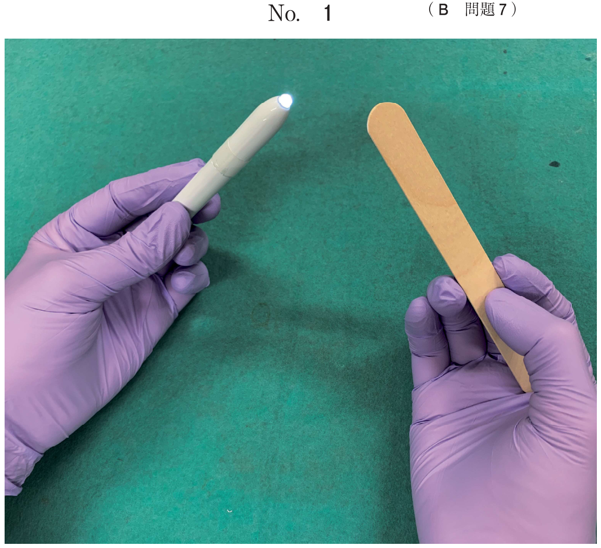
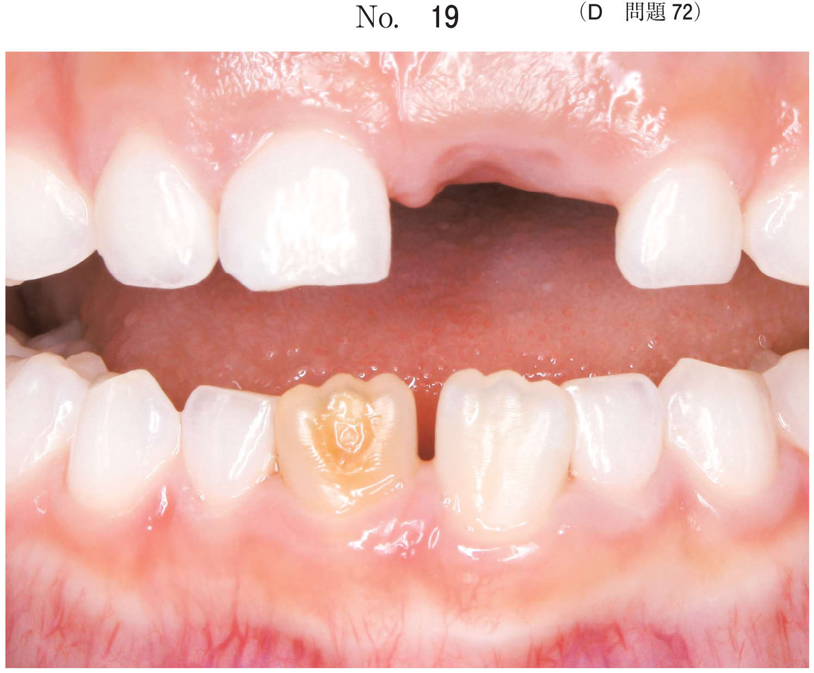
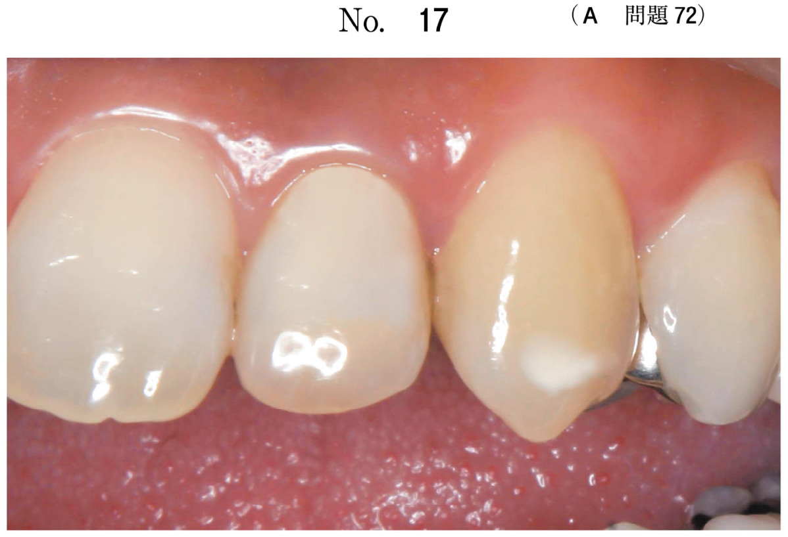
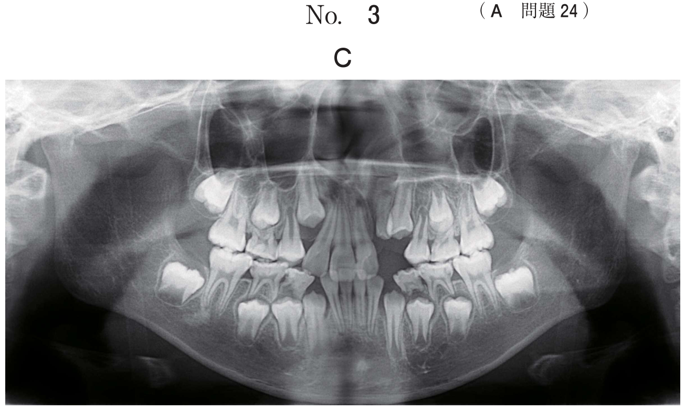
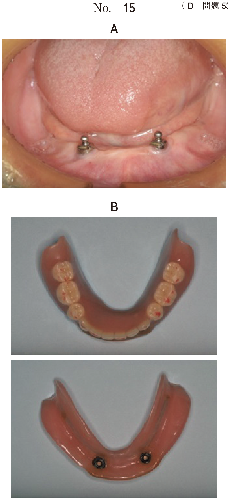

非上皮性悪性腫瘍
- 悪性リンパ腫と悪性黒色腫が同頻度で最頻出（各3問）
- 悪性リンパ腫：画像・病理所見からの診断 + 治療法（化学療法・放射線・造血幹細胞移植）
- 悪性黒色腫：臨床写真からの診断 + 広範切除が治療の主体
- 骨肉腫：画像所見（sunray appearance）と知覚異常からの診断
非上皮性悪性腫瘍の分類
| 腫瘍 | 由来 | 好発年齢・特徴 |
|---|---|---|
| 悪性リンパ腫 | リンパ球 | 高齢者、頸部に多い、B細胞性80% |
| 悪性黒色腫 | メラノサイト | 40歳以上、上顎硬口蓋・歯肉に好発 |
| 骨肉腫 | 骨芽細胞 | 30〜50歳、大腿骨に多い（口腔はまれ） |
| 横紋筋肉腫 | 横紋筋 | 小児に多い |
| 悪性線維性組織球腫 | 線維芽細胞 | 50〜70歳、男性に多い |
悪性リンパ腫
分類
- Hodgkinリンパ腫：Reed-Sternberg巨細胞が特徴。日本では少ない（全体の1/10）
- 非Hodgkinリンパ腫（NHL）：日本ではB細胞性が80%。最多はびまん性大細胞型B細胞リンパ腫（DLBCL）
臨床所見
- リンパ節領域に発生し、頸部に多い
- 口腔内では歯肉・口蓋に腫瘤として発生することもある
- 疼痛を伴うことがある（歯肉では歯周炎と誤認されることも）
治療
- R-CHOP療法（DLBCLに対する標準治療）：リツキシマブ＋シクロホスファミド・ドキソルビシン・ビンクリスチン・プレドニゾロン
- 放射線療法
- 造血幹細胞移植（化学療法無効例、再発例）
- 頸部郭清術は行わない（リンパ系腫瘍には化学療法・放射線が主体）
悪性黒色腫
特徴
- メラノサイト由来の悪性腫瘍
- 好発部位：上顎硬口蓋・上顎歯肉が半数を占める
- 約2/3に前駆病変として黒色症（melanosis）を認める
- 無色素性悪性黒色腫もある → HE染色のみでは困難、免疫染色（HMB-45, Melan-A, S-100）が必要
臨床所見
黒色を帯びた腫瘤で、約1/3はその表面に潰瘍形成や出血を伴う。腫瘤周囲に黒褐色の色素斑（前駆病変）がみられることがある。
治療と予後
- 治療：上顎骨を含めた広範囲切除が主体
- 化学療法：DTIC（ダカルバジン）、ACNU等
- 放射線感受性は低い
- 予後不良：粘膜原発の5年生存率は12.6%
- リンパ節転移率が高い（初期から46〜50%）→ 頸部郭清を考慮
骨肉腫
特徴
- 骨芽細胞由来の悪性腫瘍。口腔領域はまれ
- 好発部位：大腿骨・下腿が多い。口腔では下顎に多い
- X線所見：矢羽根模様（herringbone pattern）、sunray appearance
- 下唇の知覚異常（オトガイ神経浸潤）を伴うことがある
治療
外科的切除が第一選択。化学療法（メトトレキサート大量療法が標準）を併用。放射線・化学療法は無効であることが多い。
過去問
50歳の男性。右側顎下部の腫脹を主訴として来院した。1か月前から徐々に増大してきたという。右側顎下部皮膚に発赤は認めない。CT（別冊No.5A）、MRI（別冊No.5B）、FDG-PET/CT（別冊No.5C）及び生検時のH-E染色病理組織像（別冊No.5D）を別に示す。
診断名はどれか。1つ選べ。

b 神経鞘腫
c 放線菌症
d 悪性リンパ腫
e IgG4関連疾患
【解説】顎下部の腫脹で、FDG-PET/CTで集積を認め、病理組織像でリンパ球様の腫瘍細胞のびまん性増殖がみられる。悪性リンパ腫の診断。結核や放線菌症は肉芽腫性炎症、神経鞘腫はAntoni A/B型、IgG4関連疾患は形質細胞浸潤＋線維化が特徴で鑑別可能。
69歳の男性。下顎前歯部歯肉の疼痛を主訴として来院した。半年前に自覚し、1か月前から増悪してきたという。初診時の口腔内写真（別冊No.25A）、エックス線画像（別冊No.25B）、CT（別冊No.25C）及び生検時のH-E染色病理組織像（別冊No.25D）を別に示す。
診断名はどれか。1つ選べ。

b 残留嚢胞
c 扁平上皮癌
d 悪性リンパ腫
e エナメル上皮腫
【解説】下顎前歯部歯肉の腫脹で、病理組織像でリンパ球様腫瘍細胞のびまん性増殖を認める。口腔内の悪性リンパ腫は歯肉に腫瘤として発生し、歯周炎や骨髄炎と誤認されやすいので注意。
33歳の女性。口蓋部の腫脹を主訴として来院した。2年前に気付き、緩徐に増大してきたという。鼻出血や疼痛はない。初診時の口腔内写真（別冊No.23A）、エックス線画像（別冊No.23B）、CT（別冊No.23C）、FDG-PET/CT（別冊No.23D）及び生検時のH-E染色病理組織像（別冊No.23E）を別に示す。
診断はどれか。1つ選べ。

b 骨肉腫
c 腺様嚢胞癌
d 扁平上皮癌
e 悪性リンパ腫
【解説】口蓋部の腫脹で、FDG-PET/CTで集積あり。病理でリンパ球様細胞のびまん性増殖。口蓋は悪性リンパ腫の好発部位の一つ。腺様嚢胞癌は篩状構造（Swiss cheese pattern）、扁平上皮癌は癌真珠や角化が特徴で鑑別できる。
悪性リンパ腫に対して行われるのはどれか。3つ選べ。
b 頸部郭清術
c 放射線療法
d 高気圧酸素療法
e 造血幹細胞移植
【解説】悪性リンパ腫の治療は化学療法（R-CHOP療法等）、放射線療法、造血幹細胞移植の3つ。頸部郭清術は行わない（リンパ系腫瘍は全身性疾患であり外科的郭清ではなく化学療法・放射線が主体）。高気圧酸素療法は放射線性骨壊死などに用いるもの。
72歳の男性。左側上唇の変色を主訴として来院した。5年前から自覚していたが、徐々に膨隆し、頻繁に誤咬するようになったという。膨隆部は硬結を触知し、圧痛を認める。初診時の顔貌写真（別冊No.9A）、口腔内写真（別冊No.9B）、MRIT1強調像（別冊No.9C）及び生検時のH-E染色病理組織像（別冊No.9D）を別に示す。
診断名はどれか。1つ選べ。

b 血管腫
c 悪性黒色腫
d 色素性母斑
e メラニン色素沈着症
【解説】上唇の黒色病変で、徐々に膨隆・増大。硬結と圧痛を認め悪性を示唆する。病理でメラニン色素を含む異型細胞の増殖がみられれば悪性黒色腫。色素性母斑やメラニン色素沈着は良性であり急速増大や硬結を示さない。
65歳の女性。口蓋の着色を主訴として来院した。半年前に自覚し、最近、急速に広がってきたという。初診時の口腔内写真（別冊No.24）を別に示す。
最も疑われるのはどれか。1つ選べ。

b 悪性黒色腫
c 色素性母斑
d McCune-Albright症候群
e アマルガムによる色素沈着
【解説】口蓋の黒色病変で急速に拡大している点が悪性を示唆。口蓋は悪性黒色腫の好発部位。Addison病は副腎不全による全身性色素沈着、McCune-Albright症候群はカフェオレ斑。アマルガム色素沈着は限局性で拡大しない。
55歳の女性。口蓋部の着色を主訴として来院した。3か月前に着色に気付いたが、徐々に拡大しているという。初診時の口腔内写真（別冊No.16A）とH-E染色病理組織像（別冊No.16B）を別に示す。
本疾患の治療で正しいのはどれか。1つ選べ。

b 多剤併用化学療法は無効である。
c 上顎骨を含めて広範囲に切除する。
d エックス線に対して高感受性である。
e メトトレキサート大量療法が適用される。
【解説】口蓋の悪性黒色腫の治療。上顎骨を含めた広範囲切除が正しい。掻爬では不十分。化学療法（DTIC等）は併用されることがある（bは誤り）。放射線感受性は低い（dは誤り）。メトトレキサート大量療法は骨肉腫に対する治療（eは誤り）。
47歳の男性。左側下唇の知覚異常を主訴として来院した。数か月前に自覚したが、痛みがないためそのままにしていたところ、徐々に左側下顎が腫脹してきたという。左側下顎角部に骨様硬の膨隆を触知し、左側下唇に知覚低下を認める。初診時の口腔内写真（別冊No.24A）、エックス線画像（別冊No.24B）、CT（別冊No.24C）、FDG-PET/CT（別冊No.24D）及び生検時のH-E染色病理組織像（別冊No.24E）を別に示す。
診断名はどれか。1つ選べ。

b 扁平上皮癌
c エナメル上皮腫
d 線維性異形成症
e 中心性巨細胞肉芽腫
【解説】下顎角部の骨様硬の膨隆と下唇の知覚低下（オトガイ神経浸潤）が特徴的。骨肉腫は骨破壊と骨新生を伴い、X線でsunray appearanceを示すことがある。エナメル上皮腫は知覚異常を伴わず、線維性異形成症はすりガラス様陰影が特徴。